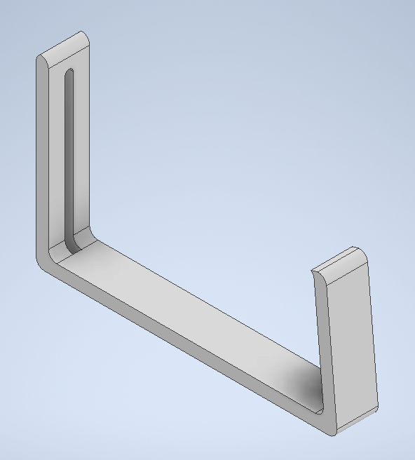
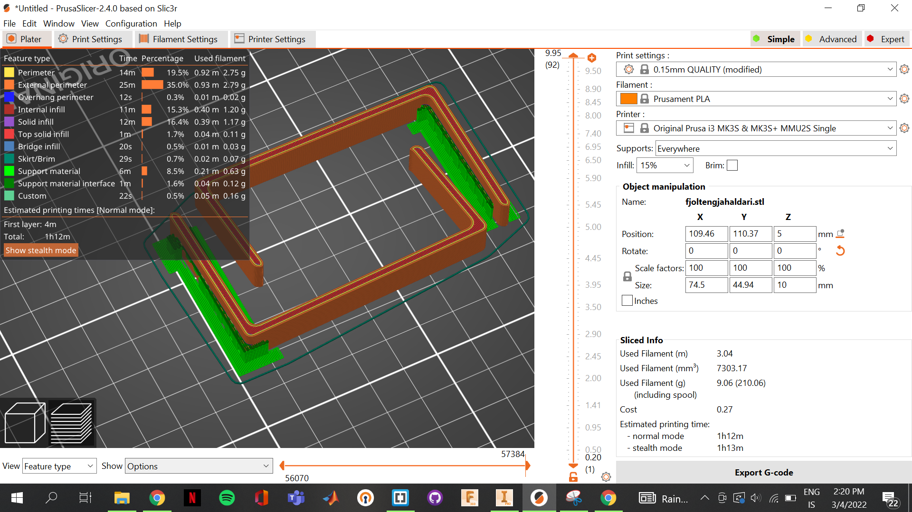

Assignment 3 -
3D printing & scanning
.png)
3D printing
Project outline
The objective of this assignment is to 3D pint anything we come up with. The only requirements is that it can not use more than 100 grams of material and make something which would be hard to make using subtracive manufacturing methods.
Before we get started
Prior to starting the assignment a decision had to made regarding what type of 3D printer should be used. The facility where the 3D printing takes place has three types of printer as listed on the homepage of the course. These three are as follows:
As far as I can tell all of these printers are built in to the Fusion 360 library so that is not a deciding factor. I decided to go for the Prusa MK3+. The reason being that after a quick chat with my teacher, as well as other students taking the course, I came to the conclusion that this printer is the easiest to use. Furthermore I was working on a seperate assignment in another class which consisted of creating a robot which could soup feed a person. To create the robot we 3D printed a lot of the comonents and I'll include a picture of the robot below.
Workload
| What was done | Time spent[hours] |
|---|---|
| Deciding what to make | 4 |
| Designing and drawing | 3 |
| Preparing design for printing | 0.25 |
| Preparing printer | 0.5 |
| installment | 0.25 |
| Documentation | 10 |
| Total work | 18 hours |
Testing
Before you can start designing and printing your object, it is wise to start with a test object. I found a test object on thingiverse, which includes:
If interested you can find the link here and a picture of the testing object can be seen here below:
Test results
The test results when printing the test in the prusa were excellent. The overhang test revealed that the printed objects should not have an unsupported overhang exceeding ~60°, the bridging test showed that a the printer is capable of printing a good amount of material without supports in a 90° direction and the other tests gave results thart were of no concern to me, due to my objects design.
Design
I thougt about it for a while what I wanted to make for my 3D printing project. However, everything I could come up with was either not within the boundaries of the assignment or just plain boring/ugly. Finally I decided to make something practical, due to me not being able to find anything fun to make. I decided to make a holder for my multiple-socket extension. It has been held up by duct tape for the last month, so I decided to spruce it up.
First I had to whip up a design for the holder. I used the the Fusion 360 program for the drawing. I started with a scetch with a rough outline of how I wanted the object to look and extruded that to one cm. I then added the slits by connecting two circles and extruding through the back. Lastly I added some fillets on the sharp edges to give the holder some finesse. The design can be seen here below:
The thought process behind the design was as follows: I made a slight decline on the right side so that it would be possible for the holder would press up against the underside of my table. I also added the slits you can see on the back so that if necessary it would be possible to fasten the unit with a screw to keep it from falling.
Next I had to save the file as a .stl file do that I could slice it in the prusa application. Next I put supports under the screw holes just to make sure everything printed as it should. Last time around I drew up the object in Fusion 360 but for this assignment I opted for Inventor. The reason for that being that I am more used to drawing up objects in Fusion and after I found out you could export your drawings as .stl as well in Inventor I made my choice. Below you can see how I set it up in the Prusa application:
As you can see I decide to use a 15% infill, due to it being necessary to bend the object. The filament used was a generic, black PLA filament and you need to make sure you update the settings in the prusa slicer application. If you are printing a large object which does not need extremely precise prints you can also set the speed at the top (I used 0.15mm quality) where the units tell you the precision.
Now all you have to do is export the G-code to the SD card used by the Prusa MK3+ and the printer takes care of the rest. Pictures (and one video) of the process and the finished products are here below:
.jpg)
.jpg)
.jpg)
.jpg)
.jpg)
.jpg)

Revision
The only thing I would add/change if I were to do this assignment again would be to increase the thickness of the clamps. They started bending a bit after clamping the multiple-socket extension. All in all though, I'd say the assignment went well.
After feedback from my teacher I degided to make the object again, this time adding to the size, opting to increase the infill to 20% and adding two "hooks" on the end so that I could wrap cords around, creating a more tidy soloution. Finally I also stress tested the holder, adding the equivalent of around 30 kg to it, and putting the force on both the bottom and the sides.
For the printing I added support enforcers and set the support function in prusa to "support on enforcers only". You can see on the images below how that turns out. All in all this gave great results and the Prusa slicer settings, Inventor drawings and stress test results can be seen below:
.jpg)
.jpg)
.png)
.png)
.png)
3D scanning
For the scan, a friend of mine recommended an app called "Polycam". The app takes photos and compiles them into 3D renders using photogrammetry. Since I was running low on time I decided to scan something close to hand, so I grabbed a soda can and scanned that. I then used the app to create an orbit video of the object and upload it to my page:Workload
| What was done | Time spent[hours] |
|---|---|
| Deciding what to scan | 0.5 |
| Documentation | 2 |
| Total work | 2.5 hours |
What I looked up
Additional printing
I (along with two others) 3D printed components for a robot in another course. The components that were printed ,and designed, by me were two arms, a base, a platform and six sungears designed for the stepper motor we used. Two pictures of the robot can be seen here below:
.jpg)
.jpg)